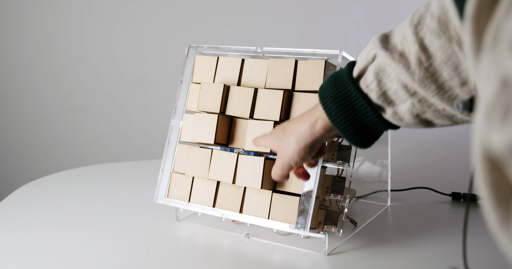
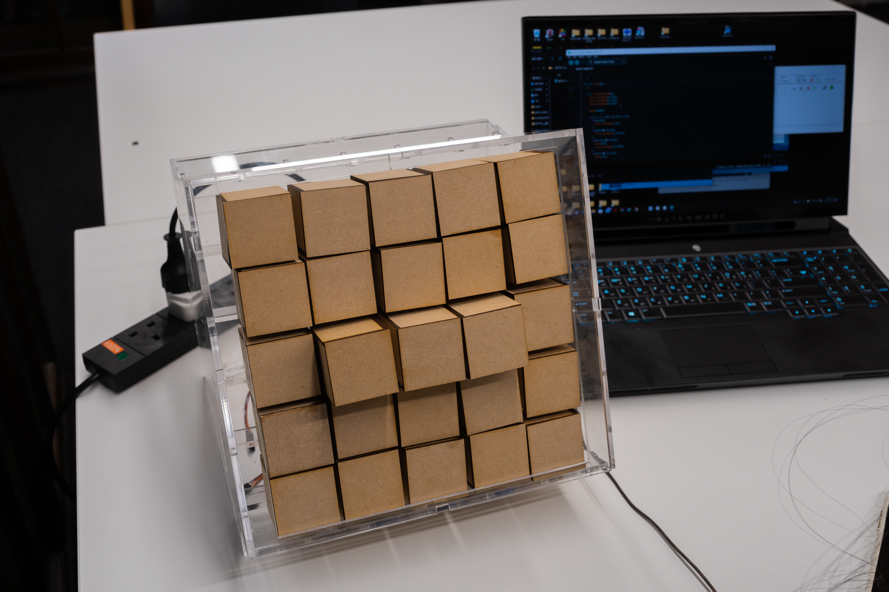
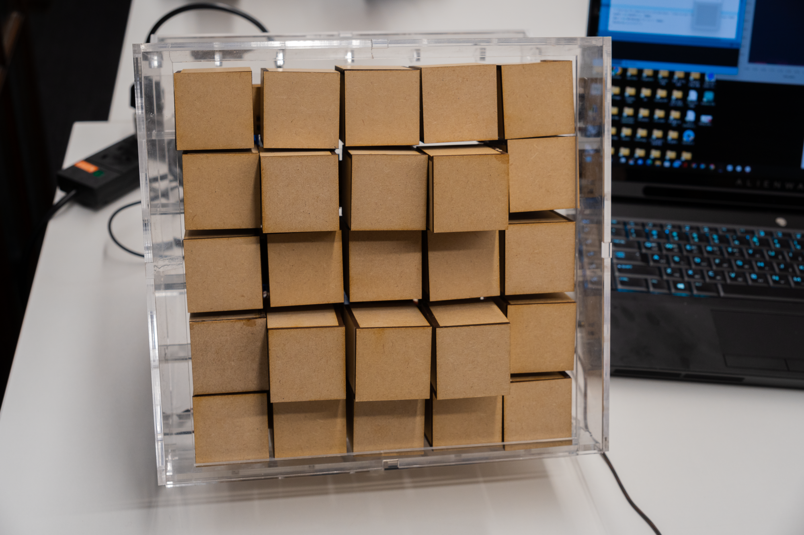
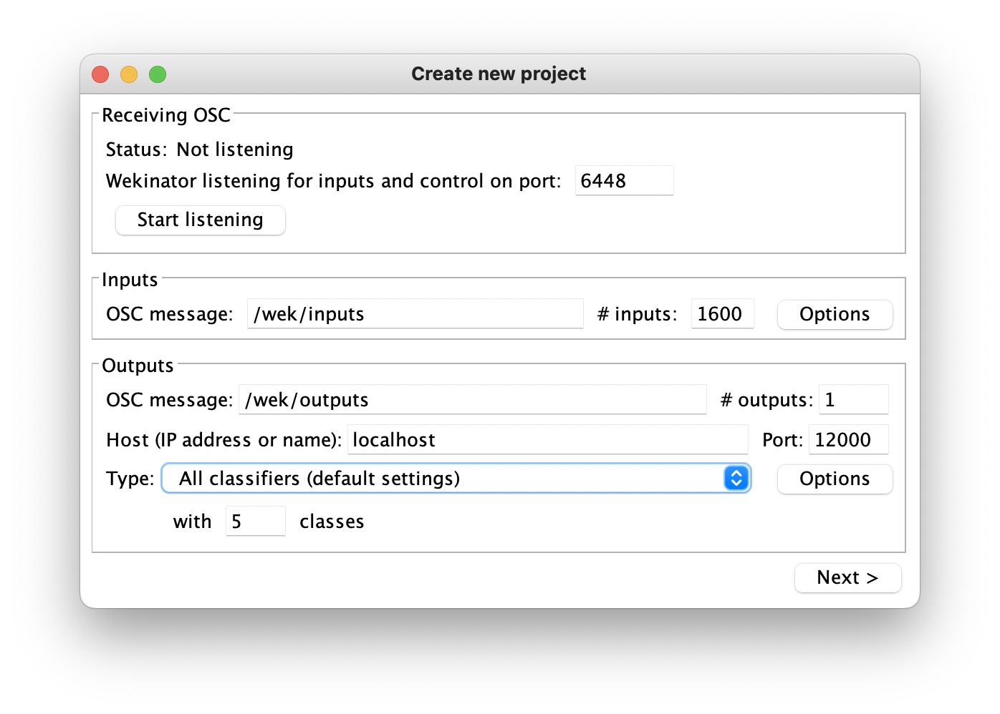
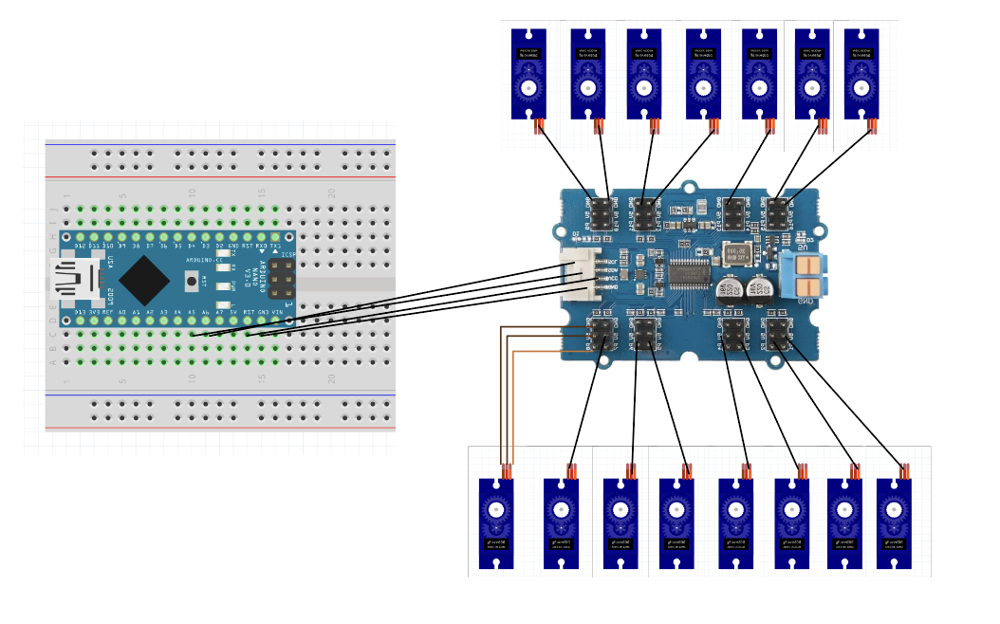
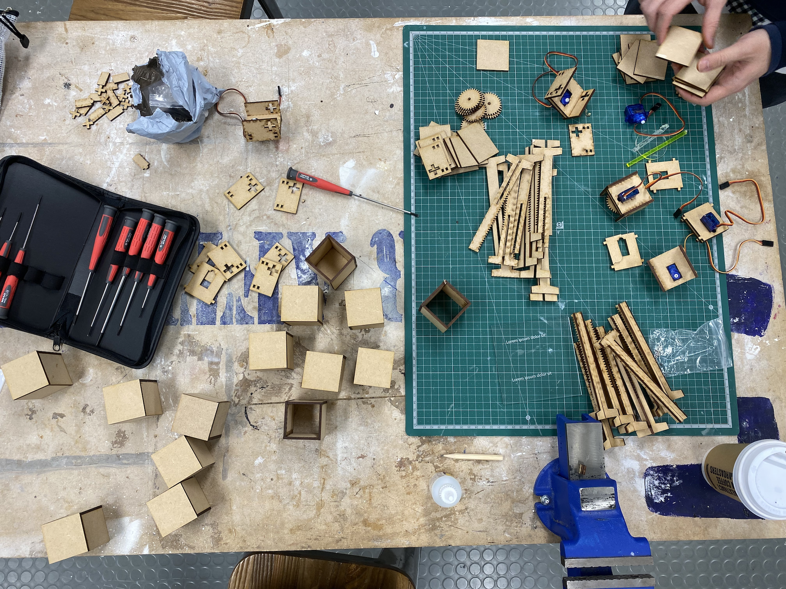
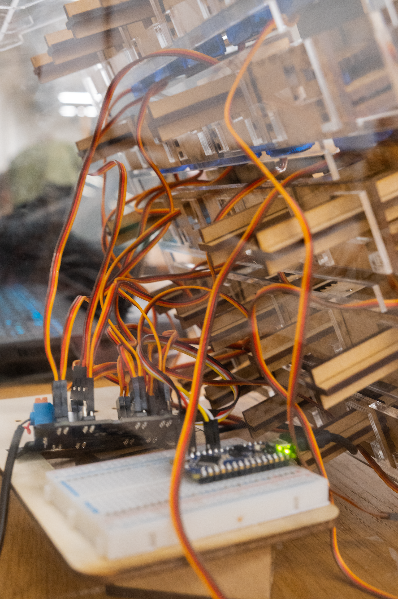
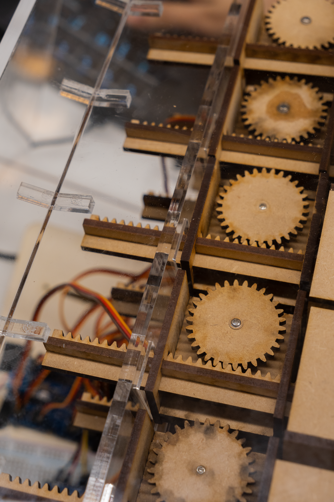
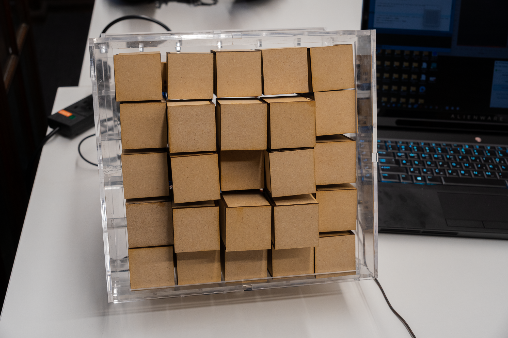

Every Chinese character consists of two components: pronunciation and meaning. This project creates an educational tool for Mandarin Chinese that breaks learning into phoneme, intonation, and writing components — using physical blocks controlled by voice, where correct pronunciation triggers blocks to move and form characters, simultaneously demonstrating stroke order.

Mandarin Chinese presents a unique learning challenge: characters encode both meaning and pronunciation, and handwriting stroke order shapes fluency. Most digital learning tools address these separately — or not at all.
This project creates a physical system where spoken Mandarin directly controls physical blocks that form characters. Speaking a character correctly moves the blocks; the blocks' movement traces the correct stroke order. Pronunciation and writing are learned simultaneously, through interaction.


The system scope was limited to five Mandarin characters: 一 (yī, "1"), 二 (èr, "2"), 三 (sān, "3"), 口 (kǒu, "mouth"), and 日 (rì, "sun"). Building even this narrow vocabulary required integrating audio capture, machine learning classification, and motor control.
Audio captured through microphone is sent to Wekinator — an open-source machine learning tool — which classifies five voice gestures at 1,600 inputs via port 6448.
Processing receives the Wekinator classification and controls motors that move physical blocks, forming three-dimensional character visualizations.


Wekinator ML interface and motor circuit.

System process: audio input → ML classification → motor output → character formation.
The completed prototype demonstrates the full loop: a student speaks a Mandarin character into the microphone; Wekinator classifies the pronunciation; the correct motor sequence fires; the blocks move to form the character in the correct stroke order.
The tactile feedback loop reinforces both pronunciation accuracy and character formation in a way that screen-based tools cannot replicate.



The character 口 (kǒu, "mouth") formed by the physical block system.
The project demonstrated that machine learning classification can be integrated into a physical educational tool within a 5-week prototype cycle. By linking voice input directly to motor-driven physical output, the system creates a new modality for language learning — one that makes the invisible (pronunciation accuracy) visible and the abstract (stroke order) physical.
Video and cover photography by Marco Da Re and Kevin Lee.